Chapter 3. Birth of the ST Demo Scene in 1987
This section and the following are the center piece of the thesis. It provides a detailed analysis of the demos produced by The Exceptions and by other relevant demo-groups on the Atari ST in during the research period. The analysis will be based on hermeneutic interpretations of the demo art and its component images, music, and scrolling text from the perspective of what they depict, technical aspects, the tone, and the cultural perspective. As a means to evaluate the significance of demo art for media art history, the objective here is to learn about the limitations that the demo-makers managed to circumvent, the techniques they employed, and the messages they sent out to their audiences.
The source for the demos examined is pouet.net, the historic demoscene archive introduced above. Where possible, the demos were screened on the original hardware, a modified Atari Mega STE. This machine was released five years after the Atari ST, so it is not 100% compatible. If a demo could not be run on the original hardware, it ran in the open-source Atari ST emulator Hatari on MacOS and on the FPGA retro computer MiST (see Appendix I on the conservation and preservation of demo art for further information on emulation).
3.1 Contest of Champions: Analysis of the Demos
This analysis starts with the 1987 Atari ST demos. While the Atari 520ST was introduced in 1985, it was only released to a wider audience in 1986. The Atari Corporation first provided small programs demonstrating the capabilities of the Atari ST for use at the point-of-sale, but these were limited to image slideshows showcasing the advanced graphics without any software tricks. The very first demo produced by crackers and demo-makers was released in 1987 by The Exceptions. It was the inconspicuously named README.PRG. The demo-group released three more demos in 1987 after README.PRG: The Little Sound Demo (LSD), the Little Color Demo (LCD), and the Super-Neo-Demo-Show.
3.2 README.PRG
In March 1987, The Exceptions released the very first demo on the Atari ST, README.PRG. The file was barely 80KB. Files named README usually contained instructions or supplementary information relevant to an application, so users would normally open this kind of file before using an application. The Exceptions did not provide a text file; they provided an executable program. When users ran it first in 1987, it baffled them.
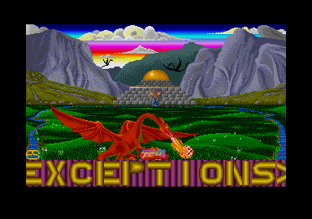
Figure 19: README.PRG, the first demo by The Exceptions (screenshot)
Compared to later demos, it was rather restricted in scope. README.PRG was a single-screen demo with scrolling text. Roughly 80% of the screen was occupied by an image created by Erik Simon (ES), and along the lower fifth, a scrolling text ran across an animated background.
3.2.1 The Elements of Design of the Readme Demo
The static graphic shows a lush fantasy landscape. The image's central piece is a red dragon perched on the base of the picture with wings spread wide. Visible in the distance behind the dragon is a temple made of square gray stones with what looks like a statue of a serpent's head hanging above the portal. Behind the temple's golden dome, there are gnarly gray mountains with other dragons flying between them. The sky is cloudy, but a bright gradient of colors stretches from the clouds to the mountains.
The red dragon's arms are resting on a box with the initials "TEX" inscribed on it; the dragon's tail is tenderly wrapped around it, somewhat obscuring the letters. The dragon tilts its head downwards and breaths fire onto a red-and-white sphere, clearly identifiable as the Amiga ball from the earliest demos on the competing machine.
The first thing that Atari ST users notice on the colorful screen are the many colors, more than the 16 colors that Atari ST usually displays. The sky's gradient already shows more than three dozen colors, far surpassing the ST's color limit; the hues of the temple, the shades of the mountains, and the saturated green of the meadows that are interfused with rich blue streams of water. In the center stands the red dragon with its venomous crimson tones, ripping into the landscape with flames engulfing the symbol of Amiga's superiority. While the dragon might well be interpreted as the Atari ST, it could well be the demo-makers themselves.
3.2.2 The Scrolling Text
These are the full contents of the demo's scrolling text with all its charming errors (the original was in all caps; the quote is converted to mixed case to make it more readable):
"Hi there!!! Welcome to the first demo screen produced by the Exceptions (TEX)! Maybe you remember all those funny little programs called "demos" on the good old '64. Here's now the first one of it's kind on Jack's good new ST. Yes, we all know that these PRG's aren't good for nothing, except for two little things... you sit and wonder whats going on with your computer, and we're getting a lot of know-how.
The Exceptions are: -ME- and ES
All the code in our demo was written by -ME- (the king of interrupts!). Graphics, characterset, colors (many, many colors eh?) and text by ES. The music was "lended" from the game 'Extensor'. Try the keys 1 - 5 (0 to escape demo)! We bet that you thought a softscrolling like this is impossible on a bitmap-machine like the st. But as you see… and it's even running on the VBL-IRQ! You don't know what the hell this means? Oh, no not again such a C-programmer! Long live 68000-assembly language!
And now, what nobody wants to see: The greetings.
Ok, hi to the few people we know: SSS, Softknight and Indy, although he doesn't like the ST... Oh yes: A very special hello to all the poor Amiga-owners who can't write assembly programs on their pretty lady (haw, haw, haw…)! To finance this program a little bit of advertising was necessary: 'listen all you people to the greatest blues-band on earth: The Dingsbums!!!! Motto: Es werd gegroovt un' werd gegröhlt un' mit em Bier de Hals geölt! Gigs everywhere round Germersheim!' Let's come to an end. Folks: excuse me if there are any 'bugs' in the text. I haven't solved enough Infocom-adventures yet. Bye for now. We're working on our second demo, the shape-out seems to be a little bit difficult. see you..."
From the outset The Exceptions had already formulated a strong motivation to create demos: to prove that the cheaper computer, the Atari ST, was as capable as the pricier Commodore Amiga. From this perceived position of inferiority, the purpose of their demos was not only to look "cool" for the sake of it, but also to beat the competing 16-bit platform.
Despite its charming spelling mistakes and Germanized English phrasing, the scrolling text of README.PRG reads like a simple manifesto. The graphics artist ES (Erik Simon) praises their work, commemorates the achievement of his partner Udo Fischer (-ME-), who coded the demo, and sends out greetings to their friends. But most of all, The Exceptions showed that they achieved something that was thought impossible: displaying many more colors at the same time than the Atari ST was deemed capable of showing and a soft scrolling text across the bottom of the screen. The background of the text even scrolls at a slightly slower pace, creating a parallax scrolling effect.
All of these effects were only possible by coding natively and directly on the processor in assembly language, the last human-readable, but still very cryptic, language before reaching actual machine code composed of ones and zeros. The disadvantage of assembly language is that it requires deep knowledge of the computer's inner workings and requires a greater proficiency than the so-called higher programming languages, like C, Pascal, and BASIC. The big advantage is the sheer speed of execution of programs written in assembly language. A good assembler programmer is also not limited by any of the formalities and requirements that higher programming languages or the operating system impose; if an assembler coder manages to find a way to coerce the hardware into doing something, then it will work. The central processing unit (CPU) or processor of the Atari ST was the Motorola 68000. The same processor also beats at the heart of the Commodore Amiga, the original Apple Macintosh, and the Sega MegaDrive/Genesis.
In their scrolling text, The Exceptions go on to mock anyone who cannot write 68000 assembly language, knowing full well that it is a daunting endeavor. Using a double entendre, ES calls anyone who does not know what VBL-IRQ means a C programmer. This might well be a programmer who writes code in the programming language C, or a class c (third-class) programmer.
They go on to ridicule owners of the Commodore Amiga, but there seems to be a nod to the superiority of the Amiga. They call the machine a "pretty lady" and then exclaim a taunting onomatopoeic laugh, which can be read as a sexist, derogatory remark. It is also a play upon the Spanish meaning of the word "amiga" as girlfriend.
In a latter section of the scrolling text, the writer alludes to advertising being necessary to finance the demo; this is quite likely tomfoolery. Both Erik Simon (ES) and Udo Fischer (-ME-) were fans of a band local to the town of Germersheim in the West German province of Rhineland-Palatinate (Rheinland-Pfalz). They go on to recount the motto of the band in German, which translates to:
"We groove, we shout, and we oil our throats with beer."
The text does have the occasional spelling mistake, but English was not the writer's first language. The punctuation is an interesting mix between German and French. Some of the opening quotes were the lower variety („...”) commonly used in German, while other quotes were a slightly wrong variation of the quotes used in French («...»), but as «...». This does not mean much, except that the text was not proofread for mistakes.
At the very end, the writer even apologizes for mistakes in the text, calling them bugs, and continues that he had not yet "solved enough Infocom-adventures." Infocom was a US-based software company known in the late 1970s through the late 1980s for their well-written text adventures, e.g., Zork, the Great Underground Empire, or The Leather Goddesses of Phobos. These were a type of text-based interactive fiction where the player reads a description of a situation or scene and then types their commands (e.g., GO EAST, GET SWORD, LIGHT FIRE WITH MATCHES) into the command prompt. The program interprets the commands, leading the player onto different situations or scenes.
From 2000 onward, this form would be retroactively named interactive fiction.[42] These text adventures were only available in English, and they have not been localized to this day because merely translating the descriptions would be insufficient. It would instead be required to adapt the text parser, the part of the application that interprets the commands, to a language other than English. However, English had its advantage, as players who were not fluent in English would learn a lot of the language by playing text adventures. They would expand their vocabulary and learn how to express themselves in a way that the English-language text parser would understand.
Before Erik Simon (ES), the writer of the scrolling text, bids farewell, he announces he and Udo Fischer (-ME-) are working on another demo.
3.2.3 Technical Limitations Broken in README.PRG
The README demo broke several the Atari ST's technical limitations. At this point in time, The Exceptions only consisted of Udo Fischer (-ME-) and Erik Simon (ES), so they focused on graphics and scrolling. The Atari ST did not have any dedicated scrolling hardware capabilities, so programming smooth scrolling was up to smart programmers. The computer had a vast palette of 512 colors but was straddled with the 16 color-limitation.[43] The Exceptions managed to produce:
- 92 colors on the screen at the same time (from the overall palette of 512 available colors)
- Smooth horizontal scrolling at 50Hz
How did The Exceptions manage to get that many colors on the screen at the same time? They used a technique called "raster interrupts." As the name suggests, this technique combines the "raster" method of drawing a screen image on a cathode ray tube monitor or television with the ability to "interrupt" a processor's work to produce small changes and immediately return to the original task.
An "interrupt" is a signal from a computer's component sent to the main processor (CPU) to halt any operation in progress and jump to a specific routine in memory to do something else. After completing the task in the routine, the CPU resumes at exactly the point it was interrupted.
The term "raster" is used to describe the scanlines on a computer screen (see figure 20). A computer creates the screen image on the monitor line by line by feeding information to the electron beam that travels across the monitor or TV screen. This happened 50 times a second on the European screens and 60 times a second on US and North American screens due to the different electrical frequencies used in the regions.
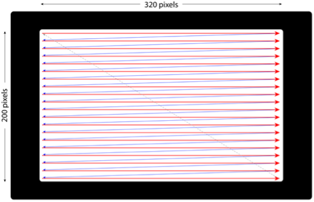
Figure 20: The horizontal path of the electron beam on the CRT display
The Atari ST had three resolutions. The high and medium resolutions were conceived for business applications such as word processors, spreadsheets, databases, and desktop publishing, while the low resolution was the one The Exceptions used for their demos (and was used for most Atari games of the day).
The low-res screen was 320 pixels wide and 200 pixels high. This area is a large part of the screen, but it does not occupy all of the screen because, in the 1980s and early 1990s, computer screens had a border around the main image. The smaller image area allowed the Atari ST to work with different TV standards (the PAL standard in Europe with a slightly larger available area but a lower frequency of 50Hz, and the NTSC standard in North America, with a small area but a higher screen refresh rate of 60Hz). The borders also keep the main image in the center of the screen, away from the curvature of the TV/monitor tube where it would suffer from less distortion (which was much greater towards the edges). Effectively, it means that around 75% of the screen area was actually available to use (see figure 21).
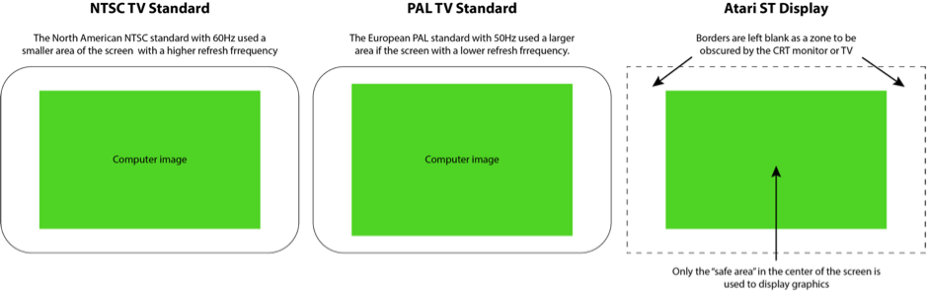
Figure 21: The differences in size, depending on TV standard and the borders used by the Atari ST
3.2.4 Adapting the Scanline
A "raster interrupt" is an interrupt that is deliberately triggered when the electron beam that draws the raster of scanlines is at a certain scanline on the screen. The interrupt sends the processor to a routine that produces a change in the way the scanline is drawn, e.g., change the border color or the complete palette before the processor proceeds to the next scanline (see figure 22). When the change induced by the interrupt has been registered, the processor resumes its previous task under the new conditions.
In this case, the next scanline is drawn with a changed set of colors. This happens so quickly that the user does not notice any delay but is presented with much more colorful graphics than they thought possible. Unfortunately, the more interrupts a processor must handle, the less time it can spend on other tasks; if the processor must switch color palettes at every scanline, it will suffer a slight loss of performance. Precise timing is necessary to achieve the desired effects; the switch between two palettes must be completely free of flickering and distortions to look appealing and free of errors.

Figure 22: The palette switches on the main screen of the README demo by The Exceptions
In the README demo, the ST's palette switches multiple times on the main screen. The top section switches parts of the palette half a dozen times to accommodate the colorful gradient of the sky (only the colors necessary for the clouds and the mountains remained constant across most of the sky's palettes). Once the sky section no longer needs to be accounted for, the palettes only switch a few times until half of the screen has been drawn. Gold tones for the dome of the temple are needed and different shades of gray for the stone blocks of the temple.
The bottom half of the image actually has a single 16-color palette of greens, blues, and reds. The bottom quarter is occupied by the scrolling text, which consists of gold text on a purple background, which looks like it is scrolling in the opposite direction of the text. This section has a separate 16-color palette composed of yellow tones for the gold of the text, and purple shades for the background. Only 14 colors are visible in this bottom section because two color registers are reserved for the transparency of the letters.
3.2.5 Silky Smooth Scrolling
The origins of the word "scrolling" might already be forgotten, but it means "screen rolling." Essentially, the computer is moving the contents of the screen in any direction. On the Atari ST, it makes no difference if the screen contains graphics or characters; for example, when you list a text file on the screen, the text scrolls up. More complex scrolling is common in arcades and video games, called "soft scrolling", where the graphics scroll smoothly across the screen without stuttering or jerking.
In contrast to other computers of its generation (and even previous ones), the Atari ST had special chips or hardware to help with scrolling that had to be done with the ST's processor. To achieve this level of smoothness, there are several elements to be considered. The range of movement should not be too large, and the screen should refresh at 1/50th of a second, displaying the next phase of the scrolled contents.
The Exceptions had a hard time figuring out how to produce smooth horizontal scrolling on the Atari ST. They found that vertical scrolling was easy, but they wanted to use it for their scrolling text where the letters travel from the right to the left so that the viewer can read them.
The reason for the ST's difficulty with horizontal scrolling is the way it creates graphics. A bitmap image is composed of sequences of words (two bytes) in memory which contain 16 pixels of image information. If you want to shift the whole screen image or a part of it by one pixel up or down, it is sufficient to move the block of memory by a word, and the CPU can do this very quickly and smoothly. If you want to shift the screen horizontally, from right to left (or the other way), then the increment of a full word (two bytes or 16 pixels) is too large. Shifting the screen by less than a word means the actual bit content of each word must be moved. The 68000 CPU can handle about 32 lines, but anything beyond that would require its full focus, leaving no performance capacity for other operations, like music or setting up any other contents.
The Exceptions needed to avoid any scrolling operations that ran on a bit-level. Shifting a full word at a time was not smooth enough because that shifts the screen by 16-pixel increments and causes a stutter. Therefore, Udo Fischer developed a technique that used eight buffers, and the screen graphics were stored pre-shifted in two-pixel increments in each of these buffers. When the Atari ST needed to display the next step of a scrolling image, it retrieved the pre-shifted graphics from the next buffer. When seven buffers with the pre-shifted images were displayed, the processor shifted the original graphic by a full word of 16 pixels and displayed this next. To save time needed to copy the buffer contents to the screen, The Exceptions used eight virtual screens in memory and shifted the address of the graphics memory from one buffer to the next. The primary disadvantage of this method was that it was extremely memory intensive. At 32KB per screen buffer, this meant that the ST had to occupy 256KB in total for all eight buffers to achieve smooth scrolling.
3.3 Little Sound Demo (LSD)
When The Exceptions created their README.PRG demo, the only members were Udo Fischer and Erik Simon. They had programming and graphics covered, but they did not have a musician. For their first demo's music, they simply used the tune from the game Extensor, which sounded great and did a good job of using the mediocre sound chip of the Atari ST.
The Exceptions released their second demo a few months after README, and it focused on music. In the Little Sound Demo, the newest member of The Exceptions, Mad Max Jochen Hippel, was the true star. He had faithfully converted tunes from the Commodore 64 to the Atari ST. Though from a previous computer generation, the C64's SID chip was superior to the ST's YM-chip, and Mad Max meticulously converted a total of 16 minutes of music from games on the Commodore 64 that famed composer and chip musician Rob Hubbard wrote for International Karate, Monty on the Run, Commando, and Flash Gordon. Mad Max composed four more tunes for the Atari's YM/AY chip.
Rob Hubbard was a commercial music composer for video games, and at the time, was still actively writing music for 8-bit systems. His music was particularly popular on the Commodore 64, where he managed to write some of the most exciting game music that often exceeded the game in quality. In many cases, users would purchase games specifically because the game music was written by Hubbard.
He was well-known in the niche circle of gamers in the 1980s, and in 2016, Hubbard received an honorary doctorate from Abertay University for his gaming music.[44] In 2019, Hubbard performed his 8-bit music rearranged for a full classical orchestra in Hull.[45] But in 1987, writing music that was as good as Hubbard's was the Holy Grail in the demoscene, and the Little Sound Demo, naughtily abbreviated as LSD, lived up to this promise.
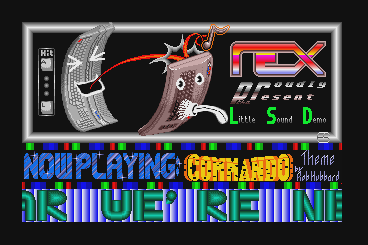
Figure 23: The Little Sound Demo (LSD) by The Exceptions (screenshot)
The demo still only featured one screen and a scrolling text. The top half showed a cartoon depiction of the Atari ST with eyes and a mouth spitting a music note on a Commodore 64 that itself had a look of bemusement, sticking out its cartoon tongue when hit by the note. The right showed the logo of The Exceptions and the name of the demo.
The graphics were not the demo's strong suit; rather, it was the sound. Users could hit the keys A to L on their Atari's keyboard and listen to faithful conversions from game music composed by Rob Hubbard and four original pieces by Mad Max. The music conversion was reasonably faithful, given the SID-chip's superiority over the ST's limited YM-chip. This was Mad Max's first attempt, and his efforts would improve in later demos.
The scrolling text was again full of bragging, but with no greetings to other demo teams. Here is the full text, again changed to mixed case for better readability.
"Here we go again!!!
TEX smashes your monitor speakers once more! Please connect your amplifier to the Atari to get totally stoned! Play it loud and hear the songs completely.
We know that you've thought the ST's sound chip is trash (to say the truth it really is trash). But now listen to the things we've done to this poor IC. The music routine was programmed by our new member Mad Max (not the Frankfurt guy). We're now able to simulate most of the commands from the Rob Hubbard synthesizer on the C-64. As you can hear we're neatly near the original tunes.
Are you sorry selling your '64 or do you dream about the good old times playing International Karate with bad graphics but with super sound?
Don't panic.
Here's LSD for your ears!
Some tunes are incomplete because you can imagine how difficult it is to reach all the effects of the SID. But Mad Max is working all day long, the results will hit your ears soon.
Soon coming another demo with some new and even better songs..."
The Exceptions were full of praise for their newest member. The team had found its musician, and they were ready to produce the next demo with even more music.
3.3.1 The Elements of Design of the Little Sound Demo
The intention of the graphic is clear: the Atari ST acts defiantly towards the Commodore 64. The execution, however, is anything but clear.
If you know what the computers look like, you will probably recognize them in their pixel-painted and curved depictions in the graphic. The musical note spewed from the ST to the C64 is also still clearly recognizable. Identifying the white cartoon lines that form the Atari ST's and Commodore 64's "eyes" and "mouth" is much more difficult. The disparity in style between those elements based on simplistic white lines and full-colored, detailed rendering of the computers make a visual connection difficult.
Finally, the scene is caged in a gray gradient tube frame that restricts the contents and serves no discernible purpose. This demo's focus is most definitely on the sound and music and not on the graphical aspects.
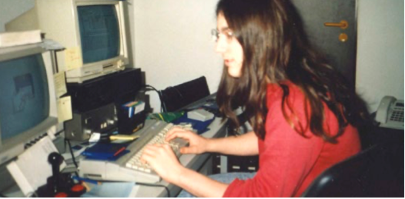
Figure 24: Jochen Hippel at his Atari ST, ca. 1987.
(Source:
Marco A. Breddin. 2017. Breakin' the Borders. Microzeit Verlag)
3.3.2 Meeting Mad Max
Udo Fischer and Erik Simon had met Jochen Hippel in a computer shop in Mannheim, Rhineland-Palatinate. The shop was a meeting place, and ironically, customers met each other there to pirate games instead of purchasing the software available. They crossed paths again and again in ST user clubs in the towns of Ramsen and Bad Dürkheim.
At the time, Jochen Hippel was 15 years old. Despite his young age, he had already programmed music routines on the Commodore 64 that sounded very much like the music of Rob Hubbard. At school, Jochen Hippel attracted attention because he had created rock versions of Christmas songs in computer class. Jochen did not own an Atari ST yet but was interested in the system.
As soon as Hippel received his own Atari ST, the two members of The Exceptions pleaded him to join them and create music for their demos (and later-on, commercial games). He simply said, "Why not?" and joined them. The team had found their music specialist in Mad Max.
3.3.3 Converting SID to YM
To convert the original Hubbard tunes from the C64's SID was particularly challenging. There was no music notation of the songs, but the programming code could be pulled from the games. Mad Max could look at the original composition in hexadecimal code, but then had to calculate the new code for the Atari ST and meticulously convert each note to the capabilities of the more limited sound chip (see figure 25).[46]
This conversion process ended up being very time consuming, so in the Little Sound Demo, the only complete pieces were from International Karate, the main theme from Commando and Flash Gordon. One of the original pieces by Mad Max was inspired by the Marche Funebre by Frederic Chopin.
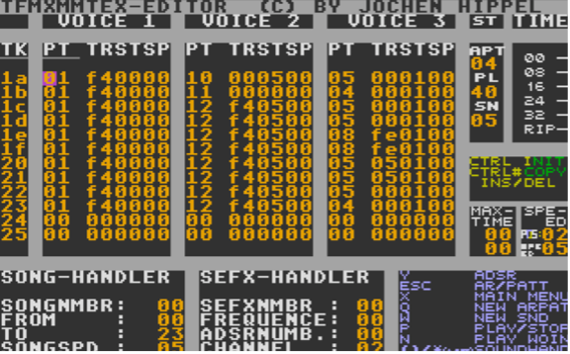
Figure 25: The Hex-codes written by Jochen Hippel to play SID
music on the Atari's YM sound chip
(Source: Marco A.
Breddin. Breakin' the Borders. 2017. Microzeit Verlag.)
3.4 Little Color Demo (LCD)
The Little Color Demo was the third demo by The Exceptions in 1987. According to their scrolling text, they completed it at the end of May, and it featured even more music that Mad Max had converted from games on the Commodore 64. Beyond that, the LCD had two scrolling messages: one vertical message and what appeared to be the tried-and-tested horizontal scrolling text of the previous demos, but with even more colors on screen beyond the machine's capabilities.
To commemorate Rob Hubbard, Erik drew a small graphic of the musician saying, "Wow!" because the tunes were even more faithful conversions of the original SID music. The vertical scrolling text had a barrel distortion effect. The screen looked like it extended beyond the borders, which in fact, was only a fake "No-Border-effect" because the graphics did not really protrude into the border area. Rather, the border color was changed in the lower part of the screen to match the screen content, only creating the impression of no borders. From a historic perspective, this was the first demo to feature a "reset screen": a screen that could only be accessed by pressing the reset button on the side of the Atari ST. It was a testament to the programming capabilities of The Exceptions that they could even intercept signals sent to the hardware reset button of the computer and deviate from it (see figure 27).
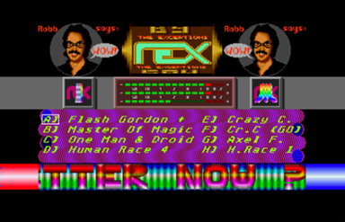
Figure 26: The Little Color Demo (LCD) by The Exceptions (screenshot)
The scrolling text of this demo teased that it looked the same as in the previous demos and thus was "boring." But then, it suddenly transformed into a multitude of colors, and users could press the keys A to H to select the music. The real-time equalizer in the screen's center showed the real operating capacity of each of the YM-chip's three voices. To show off even more effects, The Exceptions had added two rotating 3D Atari symbols to the left and right of the equalizer.
The vertical scroller at the top only had a short text and featured greetings (something lacking in the previous Little Sound Demo). The full text of the vertical scroller was quite short:
"Here we go again!!! The 3rd demo made by The Exceptions. TEX say 'hi' to the 1001 crew (especially Steve), DMA, MMC, CSS, SRG, BOSS, Alyssa."
The horizontal scrolling text erupted in technicolor grandeur, yet still used the font established in the first README demo. The contents of the horizontal scrolling text lambast the ST's sound chip at the same time, lauding the valiant musical efforts of Mad Max. It ends with the announcement that The Exceptions will now give other demo-makers a chance to produce superior demos:
"Ladies and gentlemen. We are proud to present you the latest... What?... What are you saying?... Same old boring scrollline?... Only 16 colors in it? Ok... Here you are!!! Better now?
[At this point, the scrolling text changes to multicolored text.]
Looked left? Looked right? Good! TEX have created their new mind-boggling intro: The "LCD" (Little Color Demo)!
Of course haven't forgotten the many people who are panting for new Rob Hubbard serenades on this f...ing ST soundchip.
These three TEX members have given their best: -ME- (colorful code), Mad Max (magnificent music) and ES (great graphics, daring design).
Special thanks to Rob Hubbard (see above) for his funky compositions, BST for his fast software, Rolf for lending Mad Max his disk drive, Luigi for his good pizza and to Michael for his fast Volkswagen...
We haven't much time for this demo-writing-stuff, because there is cracking to do and we're writing on our own game. But we are waiting for other demos on the ST! So where are your demos all you crackers and machine-code-freaks out there? Come on, show them what is possible on the ST!
The next demo from TEX will appear when we have seen a better one than ours! Oh, yes a "horizontal greeting" to the Blue Adept because of his good intro in 'Tenth Frame'. Hang on, Blue Adept! Oh Lord, it's now 4:30 o'clock in the morning of the 28.05.87 and our third demo is nearly ready. Mad Max falls asleep soon, typing the last pieces of 'Human Race 1' and the rest of us will follow him in a few minutes.
Bye, bye..."
According to their scrolling text, The Exceptions were going to take a break and challenge other demo-makers to produce their own demos. This turned out to be a wrong assumption, as they ended up contributing to another demo in September of 1987.

Figure 27: Pressing the reset button does not restart the computer, the screen changes a sound sample plays
3.4.1 The Elements of Design of the Little Color Demo
The graphics in the Little Color Demo are simpler and less playful than in the previous demo. The screen is crowded with little sense of distribution of the design elements, making it look like the artist panicked that any space left unused might be held against him. The elegance and use of colors from the first demo's dragon image are no longer found; instead it was replaced by generated effects, like the vertical scroller and the equalizer as centerpieces, yet drowned out by the odd repetition of the Rob Hubbard portrait image and Atari's spinning Fuji logo in front of the barely-recognizable TEX logo.
Yet, this is all contrasted by the horizontal scrolling text below with its multicolored magnificence, radiating down each of the letters and making them resemble eccentric chameleons as if they have only ever seen Kandinsky's color studies through Vaseline-smeared lenses.
3.4.2 Atari ST and Music Production
There are a few potential misconceptions about the Atari ST and its music capabilities that should be addressed at this point. The ST was popular and used frequently in the music industry. Musicians like Depeche Mode, Jean-Michel Jarre, and the Pet Shop Boys used the Atari ST in their studios.[47] It is important to note that they used the computer to enter their music compositions into a sequencer application. The Atari ST was attached to professional music synthesizers via its integrated Musical Instrument Digital Interface (MIDI) ports and provided instructions to the synthesizers to play the music sequences. The ST was the only computer of its time to come with MIDI ports by default.
By comparison, the actual sound chip that the computer used to generate music and in-game effects was merely pedestrian. Users at the time were surprised that a modern computer like the ST had such a dated sound chip in the YM-2149F. Mad Max famously said about the YM-chip: "Atari built in a totally outmoded sound chip into the most modern computer." The Commodore Amiga had far better sound hardware, and even the Commodore 64 had a superior sound chip.
This ambivalence led to the contradictory situation where the Atari ST had become the computer for professional musicians because it could control instruments, while game developers, chip musicians, and demo-makers had a hard time generating music from the internal sound chip.
3.5 Super-Neo-Demo-Show
The Exceptions wanted to become legitimate game developers. While talented, they were also young and inexperienced, and therefore needed to find the right project and the right game publisher. This also meant that they would not have the time to work on any more demos in 1987… or so they thought.
A friend in Mannheim working under the pseudonym Alyssa discovered how to display graphics in the lower border of the ST's screen.[48] This intrigued the Exceptions; they wanted to try this in practice. Udo Fischer (-ME-) managed to display complete images created by Erik Simon and other artists, and then he utilized the lower border for the scrolling text. No more small images due to the space requirements of the scrolling text! He even managed to add rasters for more colors and to play Mad Max's music with digital sound effects.
The Super-Neo-Demo-Show was created.
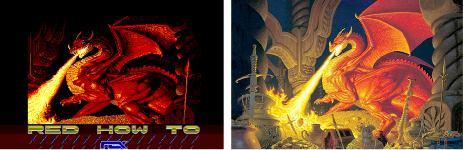
Figure 28: K. Miller pixel painted an ST version of Smaug (left) based on the original painting by Brothers Hildebrandt (right)
To call this a demo might be a bit of an exaggeration because it is actually a slideshow of six images. The images were predominantly fantasy-themed pixel art produced by Erik Simon and his friends. K. Miller pixel-painted an ST version of Smaug from J.R.R. Tolkien's The Hobbit, based on the original painting by the painting brothers Hildebrandt (see figures 28 and 29). ES painted the movie poster of the animated feature The Last Unicorn and painter Rowena Morrill's cover for Piers Anthony's fantasy novel Vision of Tarot. The other images are King Tut (a mainstay of 16-bit graphics due to the reflections on the death mask), and a Porsche Turbo Carrera (see figure 30).
The pictures were predominantly drawn by hand using the classic ST paint application NEOchrome. The whole demo screen makes use of more than 16 colors; the images themselves were pixel-painted within the ST's limitations of 16 colors, proving that the right artist can produce great results even within these limitations. The paint application NEOChrome's name is referenced in the name of the Super-Neo-Demo-Show.
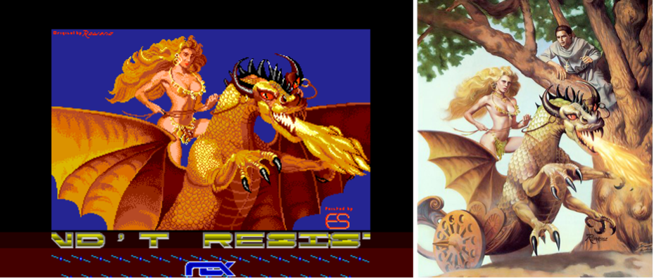
Figure 29: Erik Simon's recreation (left) of Rowena Morrill's Vision of Tarot cover (right)
The extraordinary feature of this demo is the premiere on the Atari ST. For the first time, the demo-makers managed to remove the lower border; the scrolling text occupies a part of the lower border, and Erik Simon designed a new font for it. The lower part of the border is emblazoned with the TEX logo surrounded by little propellers spinning animatedly, proving that there really are graphics in the border.
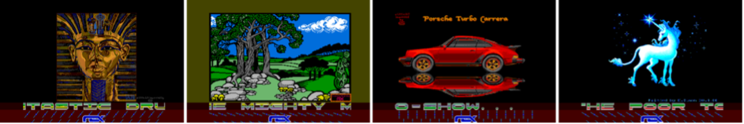
Figure 30: The four other pictures in the Super-Neo-Demo-Show
The new font for the scrolling text was necessary due to different height requirements in the lower border of the overscan area (see figure 31). While it looks cooler, it is also harder to read. Here is the full text in mixed case (in the demo, it is all caps):
"The TEX and Alyssa Super-Neo-Demo-Show!!!
The Exceptions strike again!! Originally we never wanted to write a demo again (no time!) But then our friend Alyssa discovered how to remove the lower border of the poor tortured Shifter. And so we couldn't resist to create the Super-Neo-Demo-Show...
Is it necessary to say that this little show was coded by -ME-, or that the mighty musix were composed by Robb and programmed by Mad Max? Just listen to the fantastic drums! Characterset and some of the pic's coming with our neo-show painted by ES.
We think that there is a lot of greetings to do:
Hello to MMC (thanx for the demo of Spectrum 512, Guido!), ACC (funny conversations on the phone, weren't they, Richard?), DMA, Ator (what a shit-exec on that saturday night, eh, Ator?), 42-Crew (bet you can't rip this music like some others?), HCC (nice demo,boys!), SRG, CSS, SCC and DCA.
What's new at TEX? Mad Max has done the music from Bad Cat (he had only 4 days and no notes) and he will do the soundtrack from a game called "Jules Verne". The titlesong will be a 3-voice digitized tune! -ME- will work on our fantasy-role-playing game, so does ES. Cracking will be done by Daryl in the future... And now i'm giving the keyboard over to -ME- :
Hello! I hope this lousy program will work in a few minutes or I'll get crazy.... Luckily there are only few raster interrupts to manage in our game.... movem.l.. swap.. rte.. aaarghh... So much for this time, folks, read the 'read me.txt' and then we wish you a lot of fun with the Super-Neo-Demo-Show!!!"
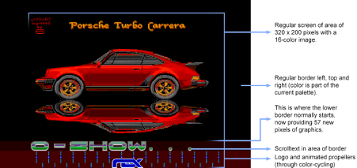
Figure 31: The Super-Neo-Demo-Show used the lower border for the scrolling text and graphics
3.5.1 From Sketchpad via MacPaint to NEOChrome
Erik "ES" Simon preferred the paint application NEOChrome. It was the paint application included with Atari ST's when the computer was first released. The application can be compared to a color version of MacPaint that was released a year prior on the Apple Macintosh and shares many of the same user interface elements and tools (see figure 33). Except for the ST's use of color, the big difference is that in NEOChrome, the tools were not aligned on the side of the screen. They occupied the half the screen together with the color palette and zoom function that was always active (see figure 32).
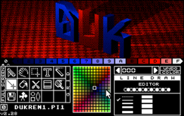
Figure 32: NEOChrome on the Atari ST (screenshot)
NEOChrome's great advantage was its simplicity. It had the main paint tools and some limited animation capabilities, but it kept Erik Simon focused on the process of painting instead of being distracted by too many functions or by the complexity of the tool.
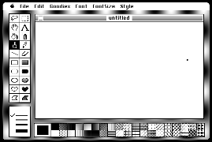
Figure 33: MacPaint 1.0 (screenshot from archive.org)
Both MacPaint and NEOChrome can trace their origin back to SketchPad developed by Ivan Sutherland in 1962, which was the first painting and drawing program ever developed (see figure 34). In "Virtual Art: From Illusion to Immersion" pioneer of new media art histories Oliver Grau describes the importance of Sketchpad:
"...Sketchpad enabled the user to draw directly onto the monitor with a hand-held lightpen and thus offered the option of manipulating images directly on the screen: the basic prerequisite for interaction with virtual realities. Sketchpad was the precursor of graphics programs such as Adobe Illustrator or MacDraw, which replaced the abstract word-commands, that is, syntax, interface with the interface of pointing at icons with a device, that is, physical action, which was also much easier to use."[49]
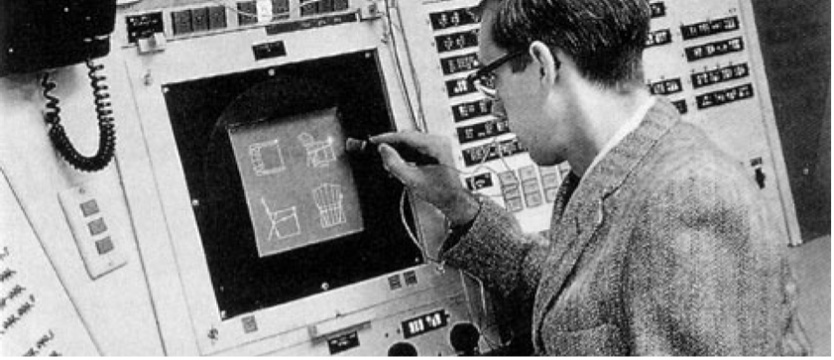
Figure 34: Ivan Sutherland drawing with a lightpen using
Sketchpad
(Source:
https://bimaplus.org/news/the-very-beginning-of-the-digital-representation-ivan-sutherland-sketchpad/)
Using a mouse instead of a lightpen, but tracing its heritage directly to Sketchpad, the intuitiveness of NEOChrome enabled Erik Simon and The Exceptions to create the artwork necessary for this completely unexpected demo, the Super-Neo-Demo-Show.
3.5.2 Technical Limitations Broken in the Super-Neo-Demo-Show
The greatest achievement of this demo was the premiere of graphics in the lower border of the ST's screen. Alyssa opened the lower border at the end of the normal screen area on line 199 by briefly switching the screen frequency from 50Hz (European standard) to 60Hz (North American standard), and then switching back to 50Hz. The ST's Shifter chip handles the graphics, then displays an additional 47 scanlines of graphics. In this way, the Super-Neo-Demo-Show had an effective screen resolution of 320 x 246 pixels, exceeding the limits provided by Atari.
Finding a way to open up the bottom border was the first elementary step that would later lead to conquering all the other screen borders. This gave them the first idea of a method to achieve what was thought to be impossible on the Atari ST: using the full screen without any borders, called overscan. The Commodore Amiga is capable of using the full overscan area out of the box.
When Alyssa discovered this trick, he demonstrated it in an intro but did not release it to the public. He revealed the technique to Udo Fisher (-ME-) of The Exceptions, who used it in the Super-Neo-Demo-Show. The Atari ST demoscene wracked their brains about how this could have been achieved, and the Exceptions disclosed the secret in their B.I.G.-Demo in 1988 (described below). Interested demo-makers had to sit through the longest scrolling text up to that point because the sync switch technique was only revealed at the very end of the text.
3.6 Backlash Cracktro
Even after their first year of demos, The Exceptions still cracked games and distributed them. Game publisher Novagen's Backlash was one of them. While the game itself is a commendable first effort at producing a cut-down clone of Sega's arcade smash-hit Space Harrier, the interesting part was not in the game itself. The Exceptions had produced the Backlash Cracktro for the game, an intro for the cracked version.
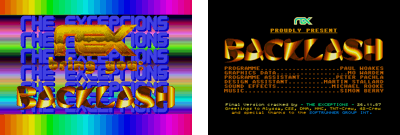
Figure 35: Left, the cracktro screen of Backlash with the first "synclock" rasters across the top and bottom border. Right, the adapted in-game credits.
In their cracktro, they had the already-established mix of snappy music by Mad Max and a variant of their logo resplendent across the screen. This was the first time that the top and the lower border were used in a demo or intro in a stable way. This technique is called "synclock" rasters. While they did not put any graphics in the borders, The Exceptions used sophisticated palette switching (rasters) across the top and bottom border to show a kaleidoscope spread across the whole width (see figure 35). The main display area also made "synclocks," the rasters on the left and right create the impression of spreading the background into the borders. The technique is particularly difficult because it requires in-depth knowledge of the ST's hardware and ample experimentation to synchronize (sync) the program code in lock with the electron beam of the display.
3.6.1 The Elements of Design of the Backlash Intro
The compositions of the Backlash Cracktro is undoubtedly crowded. There was no weighting applied to its elements, and no apparent thought put into its use of space. The Exceptions' logo is rendered in a sparkling golden aesthetic that signals "bling" and the impression of having spared no costs.
The Backlash logo was not created by Erik Simon but taken from the game itself. It nevertheless matches the other imagery with garish and unbalanced colors. That being said, the image bursts with unbridled energy and enthusiasm; it never claimed to aspire to be balanced, to unapologetically throw color and form at its audiences.
3.6.2 New Demo-Groups on the Atari ST
Other cracker groups began producing demos inspired not only by The Exceptions, but other factors as well. Demo-making was a phenomenon that spanned across all computer systems, but The Exceptions were one of the major motivating factors on the Atari ST. Other demo-makers started to match the colors, graphics, music, and sound effects of The Exceptions' first few demos, but they also set out to deliver on the next challenge: using the top border of the screen. Another team, the TNT-Crew around Michael Bittner (Hexagon), came very close to be the first to do so. Level 16 and the TNT-Crew were already independently working on "synclock" rasters when The Exceptions beat them to it with their cracktro to Backlash. Despite this, there was still much room for improvement. No one had yet put graphics into the top border.
Two years later in 1989, the three teams joined forces to become part of the Union, a conglomerate of demo-groups.
3.7 Conclusion: The Achievements in 1987
In the first year of real ST demos, The Exceptions started out as a cracking group with a few intro screens in front of their cracked games. Then, they released their first demo that broke the Atari ST's color limitation. Admittedly, they were not the first to do so, as the art application NEOchrome from the Atari Corporation had managed to display 222 colors, 208 of which were in the color picker. However, The Exceptions were the first to produce artwork in more than 16 colors. They also combatted the prejudice that the Atari ST was not capable of smooth horizontal scrolling by producing horizontal scrolling text.
In their first demo, The Exceptions established their rivalry with the Commodore Amiga, the technically superior and, at the time, far more expensive machine. They aspired to match the technical and artistic feats on the computer of their choice. On the one hand, this was out of a feeling of having chosen the possibly inferior machine; on the other hand, it was playful banter and living up to the challenge of achieving some of the same Amiga demo effects on the ST that should by not have been as capable.
In their next two demos, they addressed the limitations of the ST's sound hardware by producing music that was comparable to the superior SID chip in the Commodore 64. In all of their demos, they reached out to a virtual community of crackers and demo-makers, handing out kudos and greetings, yet still provoking their peers to produce their own works.
As the year ended, The Exceptions found their first collaboration in a demo. Together with fellow demo-coder Alyssa, they took the first step in breaching the limitations of the screen borders by removing the lower border of the ST's screen. Again, this was not only thought impossible, but also something that only the Commodore Amiga could achieve.
Their demos' graphics and effects were influenced by fantasy and science fiction, the aesthetic borrowed from computer games. They taught themselves the necessary skills to produce their work. Erik Simon (ES) learned to pixel-paint without much to reference, except for the finished works of others. Udo Fischer (-ME-) taught himself to write Motorola 68000 assembly code, and at first not even on a machine with that processor but using a simulator on the 8-bit Commodore 64. Jochen Hippel (Mad Max) mastered music-making by copying his idol Rob Hubbard and converting his favorite game music to the less capable sound chip of the Atari ST.
The language in the scrolling texts of The Exceptions was a combination of self-aggrandization with some jabs at their peers, yet oddly self-deprecating about their work. It sounded like they knew how good their skills were, but that the results they delivered always fell somewhat short of their own aspirations.
In 1987, no other full demos were produced on the Atari ST. Peers of The Exceptions still released their work as intro screens to cracked games, though other demo-groups like Level 16 and the TNT-Crew mobilized on the ST. It would take until 1988 for other demo-groups to match the work of the team from West Germany.
In the fledgling years of the Atari ST, The Exceptions established themselves as the premiere demo-group and inspired others to produce demos on the new machine. They networked with their peers in the virtual scene and contributed to the first "diskmag" ST-NEWS, a disk magazine with articles, scene news, reviews, and programming tips.
Whether they intended to or not, in their very first year, The Exceptions established the direction that Atari ST demos would take over the next years.
Footnotes
[42]
The Interactive Fiction Archive.
https://www.ifarchive.org/
(Retrieved on May 9, 2020)
» Back [42]
[43]
Two years after the release of the ST, the Atari Corporation
introduced a Blitter chip (Bit-Block Transfer Processor) for
their computer that enabled it to shift larger amounts of
graphics data smoothly. It was an optional add-on that did not
catch on in gaming and only started to be used extensively with
the introduction of the enhanced Atari STE that came with the
Blitter built in by default.
» Back [43]
[44]
Rob Hubbard, Doctor of Music, 2016. Abertay University.
https://www.abertay.ac.uk/life/alumni-and-supporters/honorary-graduates/rob-hubbard/
(Retrieved on May 29, 2020)
» Back [44]
[45]
Ombler, Matt. Game changer: the Commodore 64 concert
https://www.theguardian.com/games/2019/jul/23/game-changer-the-commodore-64-concert
The Guardian, July 23, 2019 (Retrieved on May 29, 2020)
» Back [45]
[46]
ST-Magazin 09/1988. Die Hexer (Teil 3)
http://www.stcarchiv.de/stm1988/09/tex-die-hexer-teil-3
(Retrieved on May 29, 2020)
» Back [46]
[47]
Matt Anniss. Instrumental Instruments: Atari ST. Red
Bull Music Academy, October 6, 2017
https://daily.redbullmusicacademy.com/2017/10/atari-st-instrumental-instruments
(Retrieved on May 21, 2020)
» Back [47]
[48]
The person behind the handle Alyssa was male, despite the name
reading as female.
» Back [48]
[49]
Grau, Oliver. 2002.
Virtual Art: From Illusion to Immersion. Cambridge,
Massachusetts. London, England. The MIT Press.
» Back [49]